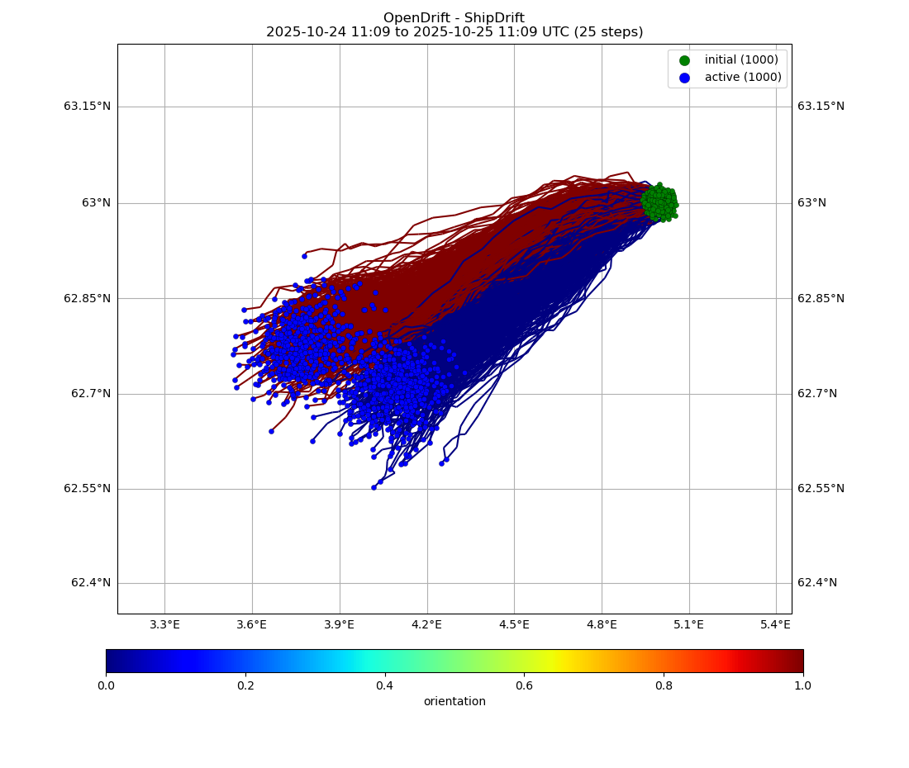
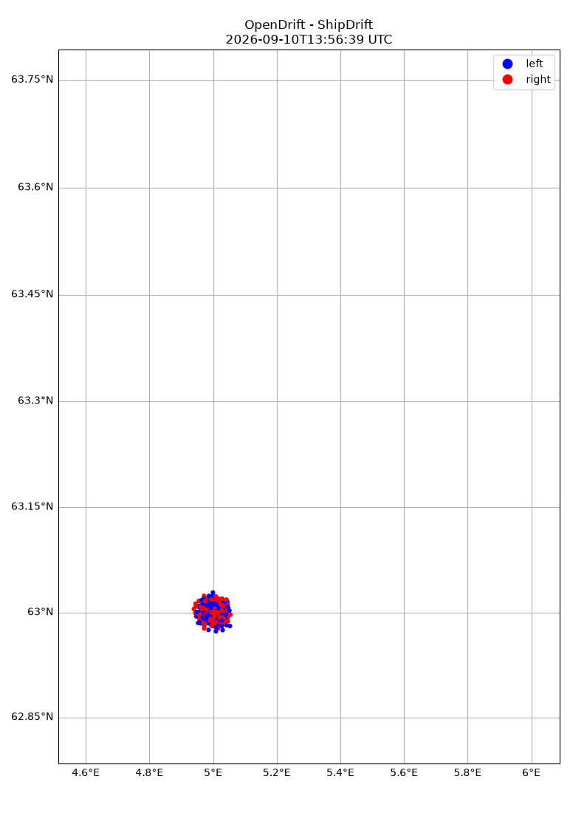

Note
Go to the end to download the full example code.
Ship drift
from datetime import datetime
from opendrift.models.shipdrift import ShipDrift
o = ShipDrift(loglevel=20)
o.add_readers_from_list([
'https://thredds.met.no/thredds/dodsC/cmems/topaz6/dataset-topaz6-arc-15min-3km-be.ncml',
'https://thredds.met.no/thredds/dodsC/mepslatest/meps_lagged_6_h_latest_2_5km_latest.nc',
'https://thredds.met.no/thredds/dodsC/cmems/mywavewam3km/dataset-wam-arctic-1hr3km-be.ncml'
])
11:09:20 INFO opendrift:569: OpenDriftSimulation initialised (version 1.14.4 / v1.14.4-13-g6c46a55)
Seed ship elements at defined position and time Note: beam/length ratio is larger than allowed, but is then clipped internally
o.seed_elements(lon=5.0, lat=63.0, radius=1000, number=1000,
time=datetime.now(),
length=80.0, beam=20.0, height=9.0, draft=4.0)
11:09:20 WARNING opendrift.models.shipdrift:181: Ratio of beam to length should be in range 0.12 to 0.18, given range is 0.25-0.25. Using border value.
11:09:20 INFO opendrift.models.basemodel.environment:203: Adding a global landmask from GSHHG
11:09:25 INFO opendrift.models.basemodel.environment:227: Fallback values will be used for the following variables which have no readers:
11:09:25 INFO opendrift.models.basemodel.environment:230: sea_surface_wave_stokes_drift_x_velocity: 0.000000
11:09:25 INFO opendrift.models.basemodel.environment:230: sea_surface_wave_stokes_drift_y_velocity: 0.000000
11:09:25 INFO opendrift.models.basemodel.environment:230: sea_surface_wave_significant_height: 0.000000
11:09:25 INFO opendrift.models.basemodel.environment:230: sea_surface_wave_mean_period_from_variance_spectral_density_second_frequency_moment: 0.000000
Running model
o.run(steps=24, stop_on_error=True)
11:09:25 INFO opendrift:1798: Storing previous values of element property lon because of condition (('general:coastline_action', 'in', ['stranding', 'previous']), 'or', ('general:seafloor_action', 'in', ['previous']))
11:09:25 INFO opendrift:1798: Storing previous values of element property lat because of condition (('general:coastline_action', 'in', ['stranding', 'previous']), 'or', ('general:seafloor_action', 'in', ['previous']))
11:09:25 INFO opendrift:945: Using existing reader for land_binary_mask to move elements to ocean
11:09:25 INFO opendrift:975: All points are in ocean
11:09:25 INFO opendrift:2094: 2025-10-24 11:09:20.803687 - step 1 of 24 - 1000 active elements (0 deactivated)
11:09:25 INFO opendrift.readers:63: Opening file with xr.open_dataset
11:09:27 INFO opendrift.readers.reader_netCDF_CF_generic:332: Detected dimensions: {'x': 'x', 'y': 'y', 'time': 'time'}
11:09:27 INFO opendrift.readers:63: Opening file with xr.open_dataset
11:09:28 INFO opendrift.readers.reader_netCDF_CF_generic:332: Detected dimensions: {'time': 'time', 'x': 'x', 'y': 'y'}
11:09:28 INFO opendrift.readers:63: Opening file with xr.open_dataset
11:09:30 INFO opendrift.readers.reader_netCDF_CF_generic:332: Detected dimensions: {'y': 'rlat', 'x': 'rlon', 'time': 'time'}
11:09:31 WARNING opendrift.readers.interpolation.structured:63: Ensemble data currently not extrapolated towards seafloor
11:09:31 WARNING opendrift.readers.interpolation.structured:63: Ensemble data currently not extrapolated towards seafloor
11:09:31 WARNING opendrift.readers.interpolation.structured:63: Ensemble data currently not extrapolated towards seafloor
11:09:31 WARNING opendrift.readers.interpolation.structured:63: Ensemble data currently not extrapolated towards seafloor
11:09:33 INFO opendrift.models.shipdrift:311: Using Stokes drift direction as wave direction
11:09:33 INFO opendrift:2094: 2025-10-24 12:09:20.803687 - step 2 of 24 - 1000 active elements (0 deactivated)
11:09:34 WARNING opendrift.readers.interpolation.structured:63: Ensemble data currently not extrapolated towards seafloor
11:09:34 WARNING opendrift.readers.interpolation.structured:63: Ensemble data currently not extrapolated towards seafloor
11:09:35 INFO opendrift.models.shipdrift:311: Using Stokes drift direction as wave direction
11:09:35 INFO opendrift:2094: 2025-10-24 13:09:20.803687 - step 3 of 24 - 1000 active elements (0 deactivated)
11:09:36 WARNING opendrift.readers.interpolation.structured:63: Ensemble data currently not extrapolated towards seafloor
11:09:36 WARNING opendrift.readers.interpolation.structured:63: Ensemble data currently not extrapolated towards seafloor
11:09:37 INFO opendrift.models.shipdrift:311: Using Stokes drift direction as wave direction
11:09:37 INFO opendrift:2094: 2025-10-24 14:09:20.803687 - step 4 of 24 - 1000 active elements (0 deactivated)
11:09:38 WARNING opendrift.readers.interpolation.structured:63: Ensemble data currently not extrapolated towards seafloor
11:09:38 WARNING opendrift.readers.interpolation.structured:63: Ensemble data currently not extrapolated towards seafloor
11:09:39 INFO opendrift.models.shipdrift:311: Using Stokes drift direction as wave direction
11:09:39 INFO opendrift:2094: 2025-10-24 15:09:20.803687 - step 5 of 24 - 1000 active elements (0 deactivated)
11:09:40 WARNING opendrift.readers.interpolation.structured:63: Ensemble data currently not extrapolated towards seafloor
11:09:40 WARNING opendrift.readers.interpolation.structured:63: Ensemble data currently not extrapolated towards seafloor
11:09:41 INFO opendrift.models.shipdrift:311: Using Stokes drift direction as wave direction
11:09:41 INFO opendrift:2094: 2025-10-24 16:09:20.803687 - step 6 of 24 - 1000 active elements (0 deactivated)
11:09:42 WARNING opendrift.readers.interpolation.structured:63: Ensemble data currently not extrapolated towards seafloor
11:09:42 WARNING opendrift.readers.interpolation.structured:63: Ensemble data currently not extrapolated towards seafloor
11:09:43 INFO opendrift.models.shipdrift:311: Using Stokes drift direction as wave direction
11:09:43 INFO opendrift:2094: 2025-10-24 17:09:20.803687 - step 7 of 24 - 1000 active elements (0 deactivated)
11:09:44 WARNING opendrift.readers.interpolation.structured:63: Ensemble data currently not extrapolated towards seafloor
11:09:44 WARNING opendrift.readers.interpolation.structured:63: Ensemble data currently not extrapolated towards seafloor
11:09:45 INFO opendrift.models.shipdrift:311: Using Stokes drift direction as wave direction
11:09:45 INFO opendrift:2094: 2025-10-24 18:09:20.803687 - step 8 of 24 - 1000 active elements (0 deactivated)
11:09:46 WARNING opendrift.readers.interpolation.structured:63: Ensemble data currently not extrapolated towards seafloor
11:09:46 WARNING opendrift.readers.interpolation.structured:63: Ensemble data currently not extrapolated towards seafloor
11:09:46 INFO opendrift.models.shipdrift:311: Using Stokes drift direction as wave direction
11:09:46 INFO opendrift:2094: 2025-10-24 19:09:20.803687 - step 9 of 24 - 1000 active elements (0 deactivated)
11:09:48 WARNING opendrift.readers.interpolation.structured:63: Ensemble data currently not extrapolated towards seafloor
11:09:48 WARNING opendrift.readers.interpolation.structured:63: Ensemble data currently not extrapolated towards seafloor
11:09:48 INFO opendrift.models.shipdrift:311: Using Stokes drift direction as wave direction
11:09:48 INFO opendrift:2094: 2025-10-24 20:09:20.803687 - step 10 of 24 - 1000 active elements (0 deactivated)
11:09:49 WARNING opendrift.readers.interpolation.structured:63: Ensemble data currently not extrapolated towards seafloor
11:09:49 WARNING opendrift.readers.interpolation.structured:63: Ensemble data currently not extrapolated towards seafloor
11:09:50 INFO opendrift.models.shipdrift:311: Using Stokes drift direction as wave direction
11:09:50 INFO opendrift:2094: 2025-10-24 21:09:20.803687 - step 11 of 24 - 1000 active elements (0 deactivated)
11:09:51 WARNING opendrift.readers.interpolation.structured:63: Ensemble data currently not extrapolated towards seafloor
11:09:51 WARNING opendrift.readers.interpolation.structured:63: Ensemble data currently not extrapolated towards seafloor
11:09:52 INFO opendrift.models.shipdrift:311: Using Stokes drift direction as wave direction
11:09:52 INFO opendrift:2094: 2025-10-24 22:09:20.803687 - step 12 of 24 - 1000 active elements (0 deactivated)
11:09:54 WARNING opendrift.readers.interpolation.structured:63: Ensemble data currently not extrapolated towards seafloor
11:09:54 WARNING opendrift.readers.interpolation.structured:63: Ensemble data currently not extrapolated towards seafloor
11:09:54 INFO opendrift.models.shipdrift:311: Using Stokes drift direction as wave direction
11:09:54 INFO opendrift:2094: 2025-10-24 23:09:20.803687 - step 13 of 24 - 1000 active elements (0 deactivated)
11:09:56 WARNING opendrift.readers.interpolation.structured:63: Ensemble data currently not extrapolated towards seafloor
11:09:56 WARNING opendrift.readers.interpolation.structured:63: Ensemble data currently not extrapolated towards seafloor
11:09:56 INFO opendrift.models.shipdrift:311: Using Stokes drift direction as wave direction
11:09:56 INFO opendrift:2094: 2025-10-25 00:09:20.803687 - step 14 of 24 - 1000 active elements (0 deactivated)
11:09:58 WARNING opendrift.readers.interpolation.structured:63: Ensemble data currently not extrapolated towards seafloor
11:09:58 WARNING opendrift.readers.interpolation.structured:63: Ensemble data currently not extrapolated towards seafloor
11:09:58 INFO opendrift.models.shipdrift:311: Using Stokes drift direction as wave direction
11:09:58 INFO opendrift:2094: 2025-10-25 01:09:20.803687 - step 15 of 24 - 1000 active elements (0 deactivated)
11:10:00 WARNING opendrift.readers.interpolation.structured:63: Ensemble data currently not extrapolated towards seafloor
11:10:00 WARNING opendrift.readers.interpolation.structured:63: Ensemble data currently not extrapolated towards seafloor
11:10:01 INFO opendrift.models.shipdrift:311: Using Stokes drift direction as wave direction
11:10:01 INFO opendrift:2094: 2025-10-25 02:09:20.803687 - step 16 of 24 - 1000 active elements (0 deactivated)
11:10:02 WARNING opendrift.readers.interpolation.structured:63: Ensemble data currently not extrapolated towards seafloor
11:10:02 WARNING opendrift.readers.interpolation.structured:63: Ensemble data currently not extrapolated towards seafloor
11:10:03 INFO opendrift.models.shipdrift:311: Using Stokes drift direction as wave direction
11:10:03 INFO opendrift:2094: 2025-10-25 03:09:20.803687 - step 17 of 24 - 1000 active elements (0 deactivated)
11:10:04 WARNING opendrift.readers.interpolation.structured:63: Ensemble data currently not extrapolated towards seafloor
11:10:04 WARNING opendrift.readers.interpolation.structured:63: Ensemble data currently not extrapolated towards seafloor
11:10:05 INFO opendrift.models.shipdrift:311: Using Stokes drift direction as wave direction
11:10:05 INFO opendrift:2094: 2025-10-25 04:09:20.803687 - step 18 of 24 - 1000 active elements (0 deactivated)
11:10:06 WARNING opendrift.readers.interpolation.structured:63: Ensemble data currently not extrapolated towards seafloor
11:10:06 WARNING opendrift.readers.interpolation.structured:63: Ensemble data currently not extrapolated towards seafloor
11:10:07 INFO opendrift.models.shipdrift:311: Using Stokes drift direction as wave direction
11:10:07 INFO opendrift:2094: 2025-10-25 05:09:20.803687 - step 19 of 24 - 1000 active elements (0 deactivated)
11:10:08 WARNING opendrift.readers.interpolation.structured:63: Ensemble data currently not extrapolated towards seafloor
11:10:08 WARNING opendrift.readers.interpolation.structured:63: Ensemble data currently not extrapolated towards seafloor
11:10:09 INFO opendrift.models.shipdrift:311: Using Stokes drift direction as wave direction
11:10:09 INFO opendrift:2094: 2025-10-25 06:09:20.803687 - step 20 of 24 - 1000 active elements (0 deactivated)
11:10:10 WARNING opendrift.readers.interpolation.structured:63: Ensemble data currently not extrapolated towards seafloor
11:10:10 WARNING opendrift.readers.interpolation.structured:63: Ensemble data currently not extrapolated towards seafloor
11:10:11 INFO opendrift.models.shipdrift:311: Using Stokes drift direction as wave direction
11:10:11 INFO opendrift:2094: 2025-10-25 07:09:20.803687 - step 21 of 24 - 1000 active elements (0 deactivated)
11:10:12 WARNING opendrift.readers.interpolation.structured:63: Ensemble data currently not extrapolated towards seafloor
11:10:12 WARNING opendrift.readers.interpolation.structured:63: Ensemble data currently not extrapolated towards seafloor
11:10:13 INFO opendrift.models.shipdrift:311: Using Stokes drift direction as wave direction
11:10:13 INFO opendrift:2094: 2025-10-25 08:09:20.803687 - step 22 of 24 - 1000 active elements (0 deactivated)
11:10:14 WARNING opendrift.readers.interpolation.structured:63: Ensemble data currently not extrapolated towards seafloor
11:10:14 WARNING opendrift.readers.interpolation.structured:63: Ensemble data currently not extrapolated towards seafloor
11:10:15 INFO opendrift.models.shipdrift:311: Using Stokes drift direction as wave direction
11:10:15 INFO opendrift:2094: 2025-10-25 09:09:20.803687 - step 23 of 24 - 1000 active elements (0 deactivated)
11:10:17 WARNING opendrift.readers.interpolation.structured:63: Ensemble data currently not extrapolated towards seafloor
11:10:17 WARNING opendrift.readers.interpolation.structured:63: Ensemble data currently not extrapolated towards seafloor
11:10:18 INFO opendrift.models.shipdrift:311: Using Stokes drift direction as wave direction
11:10:18 INFO opendrift:2094: 2025-10-25 10:09:20.803687 - step 24 of 24 - 1000 active elements (0 deactivated)
11:10:19 WARNING opendrift.readers.interpolation.structured:63: Ensemble data currently not extrapolated towards seafloor
11:10:19 WARNING opendrift.readers.interpolation.structured:63: Ensemble data currently not extrapolated towards seafloor
11:10:20 INFO opendrift.models.shipdrift:311: Using Stokes drift direction as wave direction
Print and plot results
print(o)
o.plot(linecolor='orientation')
#o.animation(color='orientation', markersize=20, filename="orientation.gif", legend=['left','right'],colorbar=False,cmap='bwr')
o.animation(color='orientation', legend=['left','right'], markersize=20, colorbar=False, cmap='bwr')

===========================
--------------------
Reader performance:
--------------------
global_landmask
0:00:00.0 total
0:00:00.0 preparing
0:00:00.0 reading
0:00:00.0 masking
--------------------
https://thredds.met.no/thredds/dodsC/cmems/topaz6/dataset-topaz6-arc-15min-3km-be.ncml
0:00:15.4 total
0:00:00.0 preparing
0:00:15.3 reading
0:00:00.0 interpolation
0:00:00.0 interpolation_time
0:00:00.0 rotating vectors
0:00:00.0 masking
--------------------
https://thredds.met.no/thredds/dodsC/mepslatest/meps_lagged_6_h_latest_2_5km_latest.nc
0:00:15.7 total
0:00:00.0 preparing
0:00:15.7 reading
0:00:00.3 interpolation
0:00:00.0 interpolation_time
0:00:00.0 rotating vectors
0:00:00.0 masking
--------------------
https://thredds.met.no/thredds/dodsC/cmems/mywavewam3km/dataset-wam-arctic-1hr3km-be.ncml
0:00:17.7 total
0:00:00.0 preparing
0:00:17.6 reading
0:00:00.0 interpolation
0:00:00.0 interpolation_time
0:00:00.0 rotating vectors
0:00:00.0 masking
--------------------
Performance:
1:00.0 total time
4.6 configuration
0.0 preparing main loop
0.0 moving elements to ocean
55.3 main loop
0.5 updating elements
0.0 cleaning up
--------------------
===========================
Model: ShipDrift (OpenDrift version 1.14.4)
1000 active ShipObject particles (0 deactivated, 0 scheduled)
-------------------
Environment variables:
-----
land_binary_mask
1) global_landmask
-----
x_sea_water_velocity
y_sea_water_velocity
1) https://thredds.met.no/thredds/dodsC/cmems/topaz6/dataset-topaz6-arc-15min-3km-be.ncml
2) https://thredds.met.no/thredds/dodsC/cmems/mywavewam3km/dataset-wam-arctic-1hr3km-be.ncml
-----
x_wind
y_wind
1) https://thredds.met.no/thredds/dodsC/mepslatest/meps_lagged_6_h_latest_2_5km_latest.nc
-----
sea_surface_wave_mean_period_from_variance_spectral_density_second_frequency_moment
sea_surface_wave_significant_height
sea_surface_wave_stokes_drift_x_velocity
sea_surface_wave_stokes_drift_y_velocity
1) https://thredds.met.no/thredds/dodsC/cmems/mywavewam3km/dataset-wam-arctic-1hr3km-be.ncml
Discarded readers:
Time:
Start: 2025-10-24 11:09:20.803687 UTC
Present: 2025-10-25 11:09:20.803687 UTC
Calculation steps: 24 * 1:00:00 - total time: 1 day, 0:00:00
Output steps: 25 * 1:00:00
===========================
11:10:35 INFO opendrift:4623: Saving animation to /root/project/docs/source/gallery/animations/example_shipdrift_0.gif...
11:10:52 INFO opendrift:3064: Time to make animation: 0:00:17.496861

Total running time of the script: (1 minutes 40.408 seconds)